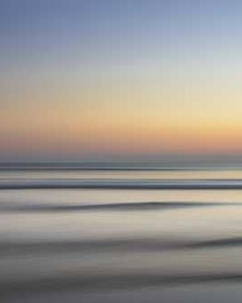

<h2>Görsellerle Çalışmak</h2>

<!-- img -->
<!--  -->

<!-- a href komutu resme link vermemizi sağlar. width ve height max sizeları belirler border fotoya çerçeve verir-->

<a href="https://www.google.com/search?q=deniz+tatili&oq=deniz+tatili&aqs=chrome..69i57j0i512l6j0i22i30l3.2851j0j7&sourceid=chrome&ie=UTF-8">
  
</a> 

<div>

  
  
</div>


</img>


